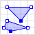

4 Introdu√ß√£o ao postgis üêò
Uma das principais características que diferenciam os bancos de dados geográficos dos demais bancos de dados convencionais, é a presença de uma coluna com a finalidade de armazenar uma propriedade geográfica do registro. Além disso , os bancos de dados geográficos também devem oferecer de forma otimizada suporte à operações espaciais. Diferente de um passado não muito distante, atualmente existem muitas alternativas de bancos de dados geográficos, como: SQL Server Spatial, ESRI ArcSDE, Oracle Spatial, GeoMesa, PostGIS, etc. Cada uma destas opções tem o objetivo em comum trabalhar com dados geográficos e todas estão sendo muito utlizadas em diversos segmentos nos dias de hoje, sendo o PostGIS a mais popular de todas.
O PostGIS é uma extensão geográfica open source para o SGDB (Sistema Gerenciador de Banco de Dados) PostgreSQL, lançada em 2001 inicialmente por uma empresa canadense chamada Refractions Research. O PostGIS segue a padronização estabelecida pelo OGC (Open GIS Consortium), que provê suporte para todos os objetos e funções da especificação SFS (Simple Features for SQL). De forma concisa, a especificação SFS foi criada pelo OGC (consórcio formado por empresas, universidades, etc) e trata das questões de representação da componente espacial e vetorial dos dados geográficos, garantindo assim, a interoperabilidade entre os sistemas os utilizam.
Este capítulo tem como objetivo introduzir ao leitor à extensão espacial PostGIS . Ao final, o leitor estará apto a configurar corretamente o ambiente para a utilização da ferramenta, carregar arquivos vetoriais e realizar operações espaciais.
4.1 Instalação
Como o PostGIS é uma extensão do PostgreSQL, primeiramente deverá ser feita a instalação do SGBD.
Importante: Não esqueça o nome de usuário e senha que você definir durante a instalação, pois essas informações serão de suma importância, anote se necessário.
A versão do PostgreSQL utilizada aqui é será a 11.5. A instalação do PostgreSQL e PostGIS no sistema operacional windows, pode ser feita através do instalador disponível nesse link, para isso fique atento durante a instalação e na segunda tela do assistente, no item Spatial Extensions marque a opção PostGIS.
A instalação do PostgreSQL e PostGIS no sistema Operacional MacOS pode ser feita através do gerenciador de pacotes brew, utilizado os seguintes comandos:
brew install postgresbrew install postgisPara a instalação nos sistemas operacionais linux, utilize os seguintes comandos :
sudo apt install postgresql postgresql-contribsudo apt-get install postgisPara verificar se a instalação do PostgreSQL foi realizada corretamente, abra o terminal e digite o seguinte comando:
psql --versionSe tudo ocorreu bem, deverá aparecer uma saída com a versão do PostgreSQL, algo parecido com psql (PostgreSQL) 11.5.
Para verificar a instalação do PostGIS, abra o terminal e execute o seguinte comando para abrir o interpretador do PostgreSQL:
sudo -u <user> psqlObs: Substitua o trecho
<user>para o usuário do PostgreSQL definido na instalação.
Com o terminal do PostgreSQL aberto, execute o seguinte comando para verificar a versão do PostGIS:
SELECT PostGIS_version();Se tudo estiver certo, deverá aparecer como saída a versão do PostGIS. Para sair do interpretador psql, basta executar o comando \q. E com isso finalizamos as configuração iniciais necessárias iniciar os trabalhos com o PostGIS. Para mais informações, consulte a página oficial do PostGIS em: https://postgis.net/install.
Na próxima seção iremos criar um banco de dados novo e habilitar nele a extensão espacial PostGIS, para que possam ser executadas as nossas primeiras consultas espaciais.
4.2 Um pouco de SQL
SQL (Structured Query Language) é linguagem padrão de consultas declarativas dos bancos de dados relacionais. Ela foi concebida na década de 1970, como resultado de um estudo feito por Edgar Frank Codd, que na época era funcionário da IBM, e propôs o modelo de banco de dados relacional (Codd 1970) que em sua essência é utilizado até os dias de hoje. Como dito anteriormente, o PostGIS é uma extensão espacial que funciona sobre o SGBD PosgreSQL, que utiliza o modelo de banco de dados relacional. Sendo assim, antes de iniciarmos de fato as consultas espaciais como o PostGIS, iremos executar alguns comandos SQL básicos para preparação do ambiente.
4.2.1 Acessando a interface PostgreSQL
O psql é uma interface padrão que funciona por linha de comando, e permite interagir rapidamente com o PostgreSQL. Como o foco deste material é a apenas apresentar alguns recursos do PostGIS, iremos executar as consultas SQL usando o psql, o que não é muito recomendado se trabalhar com esquemas mais complexos de bancos de dados, para isso, podem ser utilizadas outras interfaces mais agradáveis e eficientes como o pgAdmin.
Para acessar o psql execute o comando abaixo, substituindo o trecho <user>, pelo nome de usuário postgres que foi definido durante a instalação:
sudo -u <user> psqlAo ser solicitado a senha, digite a senha de administrador do seu sistema operacional. O psql possui algumas utilitário para o gerenciamento do PostgreSQL, use o comando \l para listar todos os bancos de dados disponíveis, em sua máquina. Algo parecido com o que mostrado na Figura 4.1 deverá aparecer.

Figure 4.1: Listando todos os banco de dados através do psql.
Normalmente, a instalação padrão do PostgreSQL cria algumas bases de dados. A seguir, iremos utilizar comandos SQL para criar um novo banco de dados e também adicionar a extensão espacial do PostGIS.
4.2.2 Criando uma nova base de dados
A linguagem SQL é organizada em alguns subconjuntos, cada um deles com comando específicos para determinadas tarefas. A Figura 4.2 mostra a os subconjuntos que compõem a linguagem SQL.

Figure 4.2: Listando todos os banco de dados através do psql.
DDL - Data Definition Laguage (Linguagem de Definição de Dados): É o subconjunto de instruções da linguagem SQL responsável por manipular diretamente o esquema do banco de dados e estrutura das tabelas.
DML - Data Manipulation Language (Linguagem de Manipulação de Dados): É o subconjunto de instruções da linguagem SQL responsável por interagir diretamente com os dados das tabelas.
DCL - Data Control Language (Linguagem de Controle de Dados): É o subconjunto de instruções da linguagem SQL responsável por administrar a segurança das bases de dados, adicionando ou removendo permissões.
TCL - Transaction Control Language (Linguagem de Controle de Transação): É o subconjunto de instruções da linguagem SQL responsável por gerenciar as transações das consultas SQL.
Neste material, o escopo abordado será apenas alguns comando do subconjunto DDL e DML. Para mais informações a respeito do gerenciamento de banco de dados e a organização da linguagem SQL, recomenda-se a leitura do trabalho de (Kumar, Raheja, and Sachdeva 2012), o qual aborda com mais aprofundamento estes tópicos.
Agora iremos criar um banco de dados para trabalharmos com os recursos espaciais do PostGIS, para isso execute o comando a seguir:
CREATE DATABASE dbgeo;O comando acima cria um novo banco de dados chamado dbgeo. Caso queira o criar um banco de dados com o nome diferente, utilize o mesmo comando substituindo o trecho dbgeo pelo nome desejado. Após receber a mensagem de confirmação, será necessário mudar o interpretador psql para o novo banco de dados criado, para isso utilize o seguinte comando:
\l dbgeo;Note que o trecho dbgeo é o nome da base de dados que foi criada no passo anterior. Se tudo estiver ocorrido bem, deverá aparecer a confirmação conforme a Figura 4.3.

Figure 4.3: Criando e alterando base dados.
Por fim, para habilitarmos a nova base de dados para suportar operações com dados espaciais, iremos adicionar a extensão PostGIS. Para isso, execute o seguinte comando:
CREATE EXTENSION postgis;Após adicionarmos a extensão PostGIS em nosso banco de dados, vamos criar a nossa primeira tabela com atributos geométricos. Para isso, iremos criar como exemplo uma tabela simples onde será armazenado o modelo de rede de detecção de raios, e sua posição geográfica (latitude/longitude), com isso praticaremos os conceitos da geometria do tipo ponto. Sendo assim, execute o seguinte comando em seu terminal:
CREATE TABLE lightning_network(
id serial PRIMARY KEY,
model VARCHAR(15) NOT NULL,
location GEOMETRY NOT NULL
);Observe que o atributo location da tabela, possui o tipo definido como GEOMETRY, esse é um dos recursos que o PostGIS, provê ao banco de dados, e tem como finalidade permitir que seja armazenado nessa coluna objetos geométricos. A seguir iremos popular nossa tabela, e realizar algumas operações espaciais. Mas antes disso, será abordado brevemente a linguagem de marcação de texto que permite a criação objetos vetoriais, o Well-known text (WKT).
4.2.3 Well-known text
O WKT foi originalmente proposto pela OGC, e sendo descrita pelo Simple Feature Access (OGC 2011). A forma equivalente do WKT em binário Well-known binary (WKB), também está descrita no SFA, e é como a geometria é armazenado nas tabelas. A tabela a seguir mostra os os principais tipos geométricos e suas respectivas representações em WKT.
| Tipo | Geometria | WKT |
|---|---|---|
| Ponto |  |
POINT (30 10) |
| Segmento |  |
LINESTRING (30 10, 10 30, 40 40) |
| Polígono |  |
POLYGON ((30 10, 40 40, 20 40, 10 20, 30 10)) |
| Multi-Ponto |  |
MULTIPOINT (10 40, 40 30, 20 20, 30 10) |
| Multi-Segmento |  |
MULTILINESTRING ((10 10, 20 20, 10 40), (40 40, 30 30, 40 20, 30 10)) |
| Muli-Polígono |  | MULTIPOLYGON (((30 20, 45 40, 10 40, 30 20)), ((15 5, 40 10, 10 20, 5 10, 15 5))) |
| Coleção |  |
GEOMETRYCOLLECTION (POINT (40 10), LINESTRING (10 10, 20 20, 10 40), POLYGON ((40 40, 20 45, 45 30, 40 40))) |
Principais representações geométricas em WKT. Adaptado Wikipédia .
Para mais informações a respeito do WKT e WKB, recomenda-se a leitura do manual da Simple Feature. Agora iremos adicionar alguns registros na tabela criada anteriormente, para isso execute o segundo comando:
INSERT INTO lightning_network(model, location)
VALUES('LINET', 'POINT(-23.55 -46.73)');
INSERT INTO lightning_network(model, location)
VALUES('GLD360', 'POINT(-3.01 -60.05)');Para verificar como ficaram armazenados os registro, execute a seguinte consulta:
SELECT model, location FROM lightning_network;Como dito anteriormente, a representação da geometria por padrão é armazenada como WKT no banco de dado, portanto, ao executar a consulta anterior, deverá aparecer na saído algo como:
id | model | location
----+--------+--------------------------------------------
2 | LINET | 0101000000CDCCCCCCCC8C37C03D0AD7A3705D47C0
3 | GLD360 | 010100000014AE47E17A1408C06666666666064EC0
(2 rows)O aprofundamento da estrutura WKB está fora do escopo deste material, caso o leitor deseja se aprofundar mais neste tópico, bem como no WKT, recomenda-se a leitura da documentação do PostGIS, onde é abordado com mais detalhes este assunto. Para exibir na saída a geometria de forma mais agradável, execute:
SELECT model, ST_AsText(location) as location FROM lightning_network;Usando a função ST_AsText(), a geometria será exibida formatada em WKT, como mostrado abaixo:
model | location
--------+----------------------
LINET | POINT(-23.55 -46.73)
GLD360 | POINT(-3.01 -60.05)
(2 rows)Como o estudo aprofundado de banco de dados não faz parte do escopo deste material, e o objetivo é apenas uma introdução acerca dos conceitos relacionados os PostGIS, a partir de agora, os objetos geométricos não serão armazenados no banco de dados.
4.3 Funções geométricas
O PostGIS oferece mais de 300 funções e operadores espaciais (Regina and Hsu 2011). Embora possua um grande acervo, normalmente somente algumas dessas funções e operadores são utilizadas com muita frequência. A seguir serão apresentadas funções envolvendo alguns tipos geométricos.
Obtendo centroid
O centro de uma geometria pode ser obtido através da função ST_Centroid(), passando como argumento a geométrica que se deseja obter o centroid. No exemplo a seguir, serão calculados os centróides das duas geometrias mostradas na Figura 4.4.
Figure 4.4: Geometrias para calcular o centroid.
SELECT ST_AsText(ST_Centroid('LINESTRING(1 2,3 4)')) as centroid;A saída deverá ser:
-[ RECORD 1 ]--------
centroid | POINT(2 3)Agora o centroid de um polígono:
SELECT ST_AsText(ST_Centroid('POLYGON((4 2, 8 2, 8 4, 4 4, 4 2 ))')) as centroid;A saída deverá ser:
-[ RECORD 1 ]--------
centroid | POINT(6 3)Calculando área
A área de um polígono pode ser calculada utilizando a função ST_Area, como mostrado no exemplo a seguir:
SELECT ST_Area('POLYGON((4 2, 8 2, 8 4, 4 4, 4 2 ))') as area;A saída deverá ser:
-[ RECORD 1 ]
area | 8Calculando comprimento
O comprimento de um segmento pode ser calculada utilizando a função ST_Length, como mostrado no exemplo a seguir:
SELECT ST_Length('LINESTRING(1 2,3 4)') as comprimento;A saída deverá ser:
-[ RECORD 1 ]--------------
comprimento | 2.828427124746194.4 Relacionamentos espaciais
Os relacionamentos espaciais talvez seja uma das partes mais importantes no contexto de sistemas de informações geográficas. Essas operações são baseadas na matriz de 9 interseções apresentada em capítulos anteriores deste material. O PostGIS provê uma função onde é possível obter o resultado de uma matriz de 9 interseções, passando como argumento da função ST_Relate duas geometrias. Como exemplo considere as geometrias que foram utilizadas na seção anterior (segmento e polígono), ao aplicar o ST_Relate, será retornado a matriz de 9 interseções como ilustrado na Figura 4.5 e no código a seguir:
SELECT ST_Relate('LINESTRING(1 2,3 4)', 'POLYGON((4 2, 8 2, 8 4, 4 4, 4 2 ))');Saída:
-[ RECORD 1 ]--------
st_relate | FF1FF0212Figure 4.5: ST_Relate e matriz de 9 intersecções.
A seguir será aplicado a função ST_Distance() para calcular a distância entre as duas geometrias utilizadas no código anterior:
SELECT ST_Distance('LINESTRING(1 2,3 4)', 'POLYGON((4 2, 8 2, 8 4, 4 4, 4 2 ))');Saída:
-[ RECORD 1 ]--
st_distance | 1Todas os demais relacionamentos espaciais seguem o mesmo padrão das últimas consultas, ou seja, ST_Função(geomtria1, geometria2). Este capítulo teve como objetivo somente introduzir o leitor ao PostGIS, tudo não passa de uma minúscula ponta do iceberg. A literatura é repleta de conceitos bem consolidados, desde materiais bem didáticos até mais técnicos, vale a pena da uma conferida. Uma última recomendação fica sendo o livro PostGIS in Action (Regina and Hsu 2011).